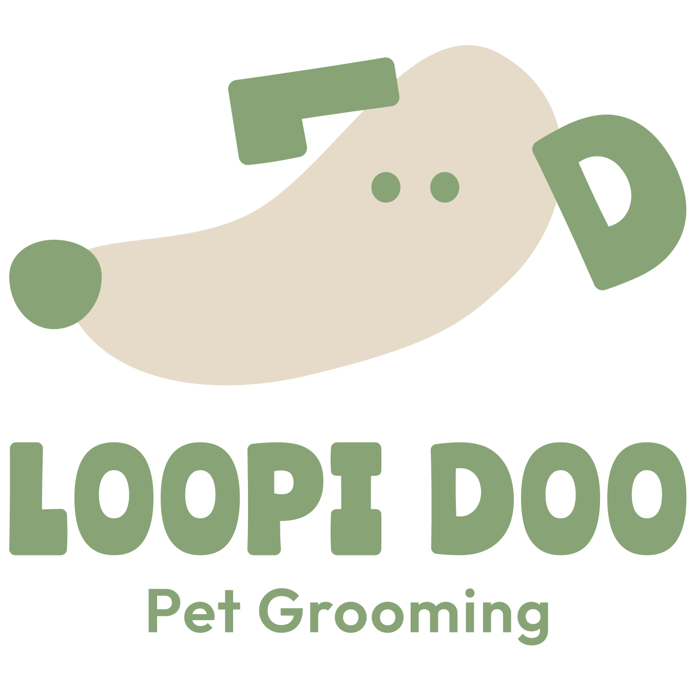
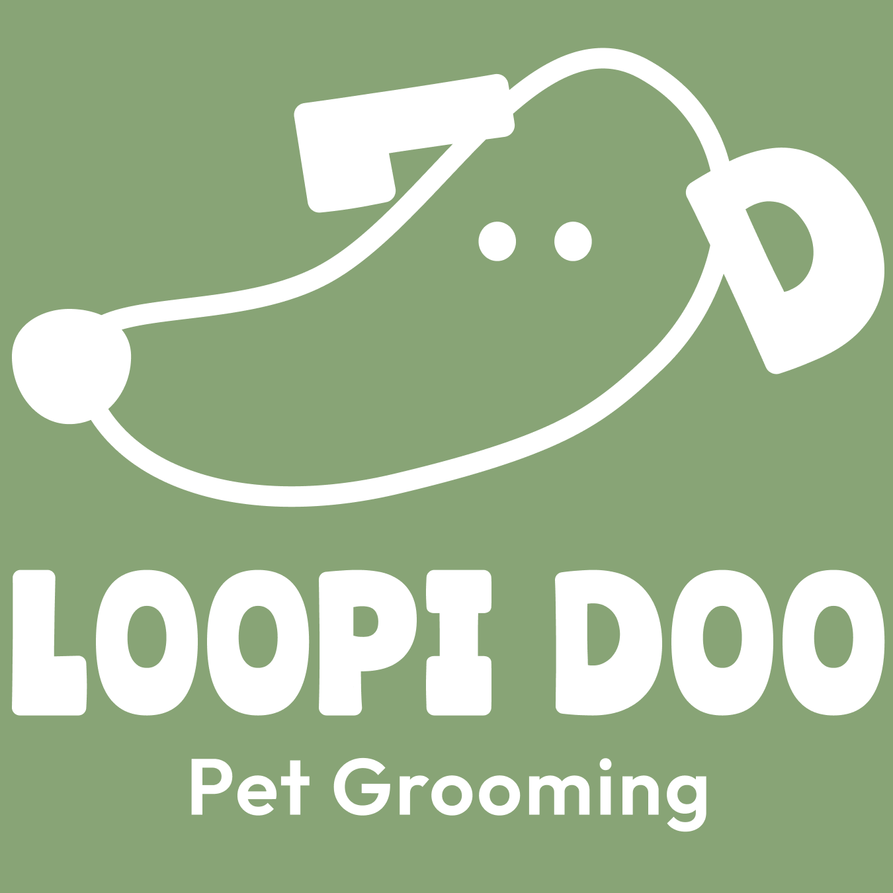
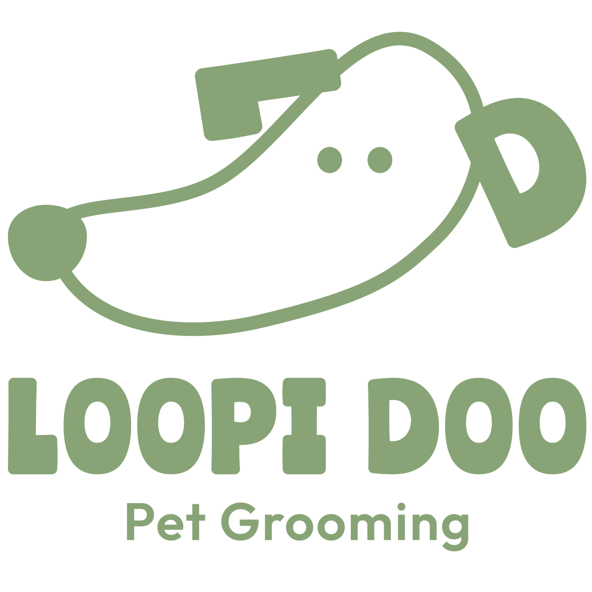
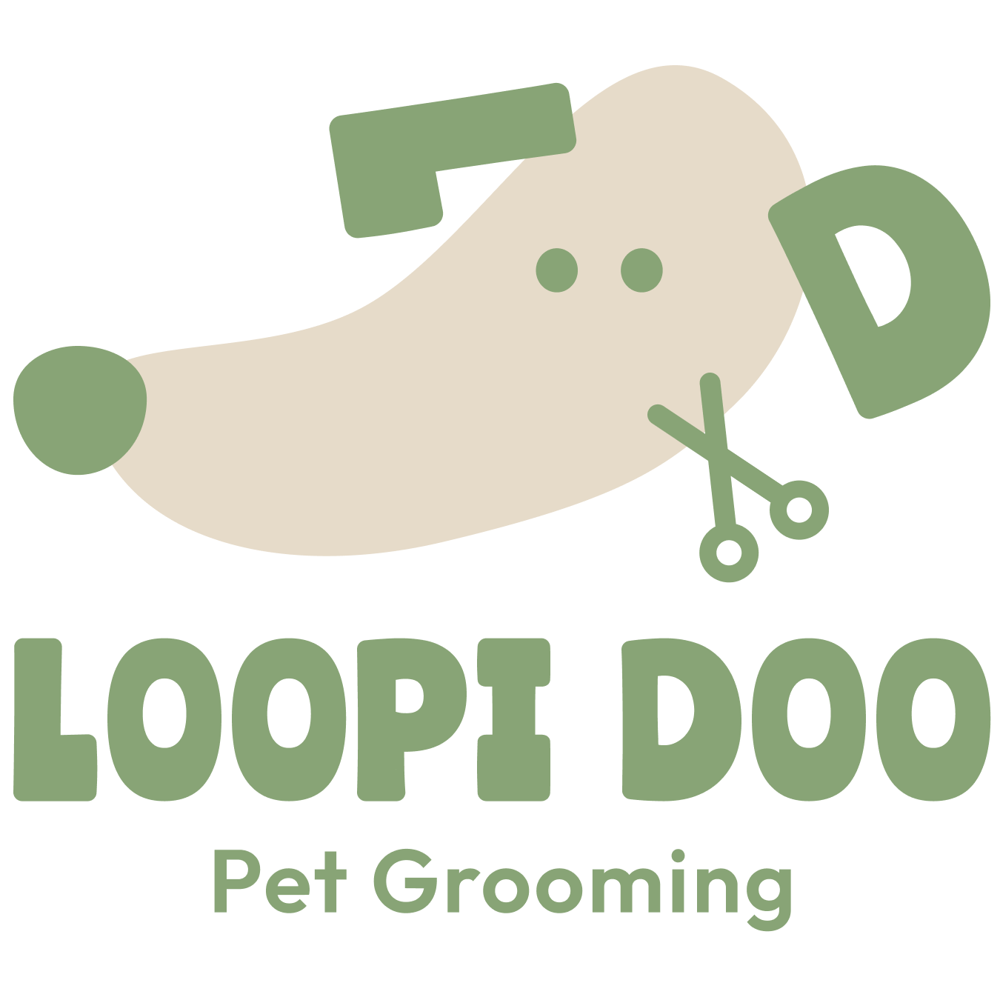
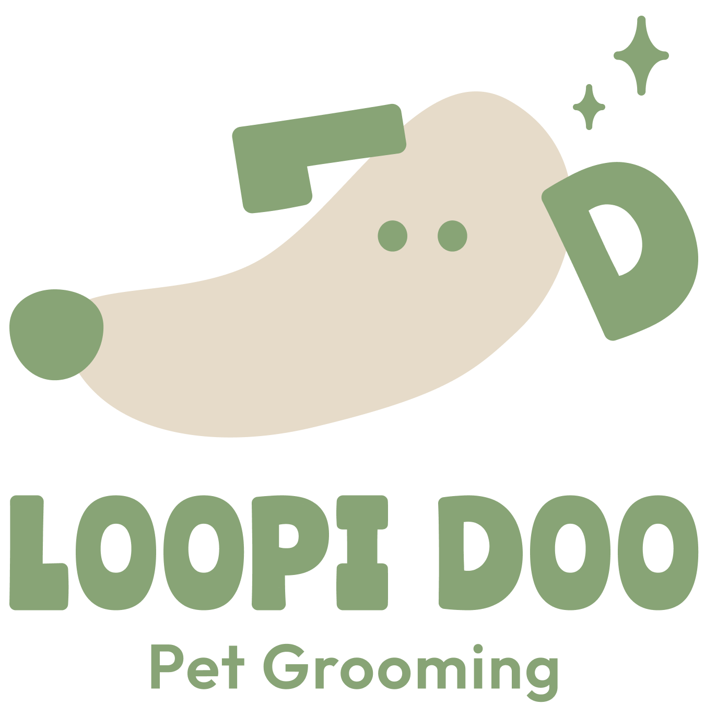
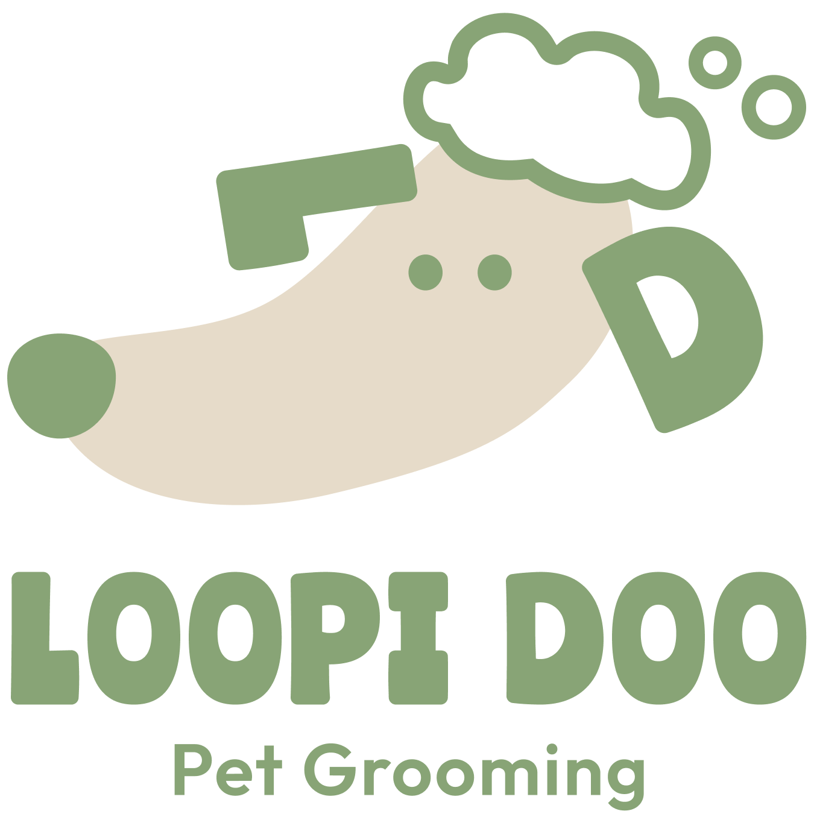

A friendlier, clearer LOOPI DOO.
The name now stands on its own, and a simple hand-drawn dog carries the charm — with the ears hiding an “L” and a “D”.
Easy to read, warm to look at, simple to remember.
This direction separates the wordmark from the illustration so each can do its job clearly. Here is the thinking behind each part — and three optional variations to explore.
A name that stands on its own
The name “LOOPI DOO” is now separated from the dog illustration, making it easier to read for people of all ages.
Ranchers, softened and rounded
For the main text I used Ranchers as the base font for its friendly, bold, and approachable character. To better match the cute and charming feeling of the brand, I adjusted the overall impression by emphasizing softer, rounder shapes — keeping the logo playful and warm without making it feel too childish.
A simple, hand-drawn dog
The dog illustration was designed to feel simple, memorable, and hand-drawn. I kept a slightly imperfect, organic texture so the logo feels friendly and personal.
Ears made from “L” and “D”
A key detail: the dog’s ears are created using the initials “L” and “D” from LOOPI DOO. This gives the illustration a more original identity while keeping the shape simple and easy to recognize.
Minimal by intention
Since you mentioned wanting to avoid typical pet grooming symbols — paw prints, combs, scissors, hair dryers, foam, and shampoo bottles — the regular version keeps the design very minimal.
Clear on green or on white
Two background versions keep the logo legible wherever it appears — a reversed white mark for the brand’s sage green, and a green mark for white or light surfaces.


Three small graphic accents
I understand that you would like to avoid typical pet grooming symbols such as paw prints, combs, scissors, hair dryers, foam, and shampoo bottles. However, I also created three optional variations to explore how the logo could communicate “pet grooming” more visually — not only through the text, but also through subtle graphic accents.



Bold display, clean support
Main text — friendly, bold and approachable, softened to feel cute and charming.
Sub text — clean and highly legible for the tagline, services and details.
Clear, charming, and unmistakably LOOPI DOO.